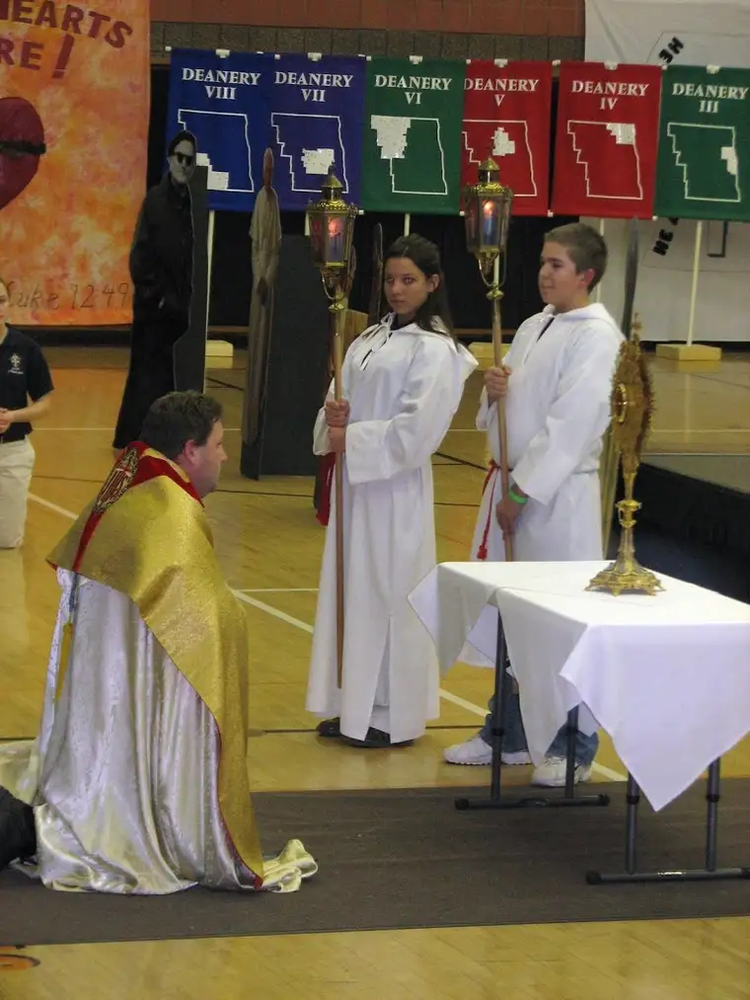
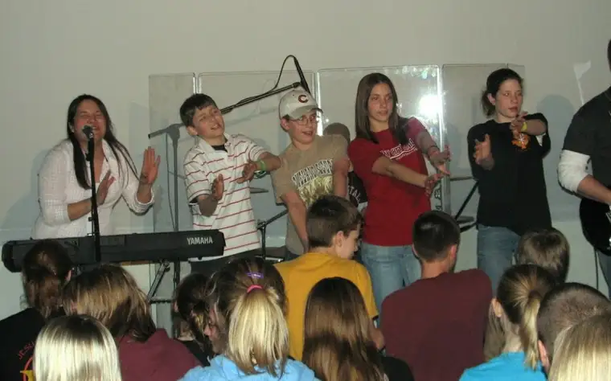
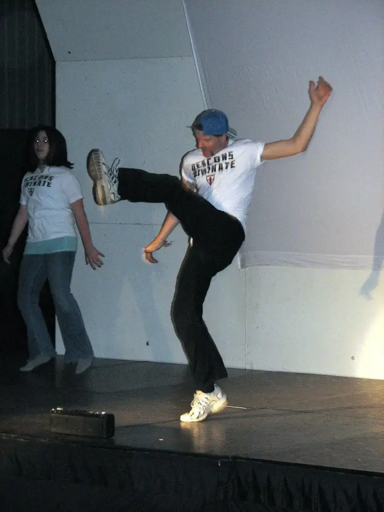

  
{kind=link}
{kind=link}
This past weekend I experienced a first when I volunteered to help chaperone a middle-school, out-of-town bus trip. When they learned what I was up to, some friends challenged my sanity: “Are you sure you want to spend your day helping keep fifty noisy kids in line?” This wasn’t a case of self-inflicted punishment, however; far from it.
With each little person we have welcomed into our family, alone time with each individual child has diminished considerably. Not a surprise, but certainly, finding that special time to nourish individual relationships with our kids has proven more than challenging at times. Though our youngest two get the most of me these days, the oldest three have to stand in line for mom or dad time. My girls are vocal about their need for time with us, but our oldest son, who had my exclusive attention for almost two years of his early life and perhaps should have the highest expectations in this regard, is less forthcoming about his feelings.
That’s why when I saw the request for helpers in the school newsletter, I didn’t even ask whether he wanted to go. “I signed you up for a youth rally, and I’m coming along as a chaperone.” He grunted in typical teen boy fashion. “What if I don’t want to go?” I stood firm. “It’s too late.” But a few days before the trip when he learned some of his good friends also had signed up, his resolve had lessened. “So, are you going to follow me and my friends around or something when we’re there?” I assured him, no, I would find another mother and leave him be. “Well,” he said, “you can if you want. I mean, you can hang out with us. I don’t care.”
Needless to say, nothing else mattered after that. The morning of the rally I got up much earlier than usual, scrunched into the uncomfortable seat next to another chaperone on the chilly, yellow school bus, marked down names of everyone present and said a little prayer as we made our way through the morning fog. While I sat at the front of the bus, my son stayed near the back with his buddies. When we arrived at our destination, I let him have his space, but midway through the event I felt a tap behind me while sitting in the bleachers, and there he was, flanked by his friends, sitting near me.
I had a wonderful day at the rally. The presentations, music and rituals that were part of the day filled me with life. But by far, the best part of the day was occasionally crossing paths with my son, feeling grateful he was not only willing, in the end, but eager to share his world with me. Most of the day I stayed out of his path, choosing not to hover, but even though we were not tied at the hip physically, it was if our hearts were meeting up and dancing together throughout the day.
We got back much later than expected, and as I stepped into the house I felt the wear of the day from the busyness and incessant chat of teenagers come over me. Nevertheless, the day was far from a burden. My mother’s heart would jump at the chance to do it all over again…and again.
P.S. There are two priests in the above photos. Hint: one is in priest garb, the other is on stage (who said priests can have fun too?).